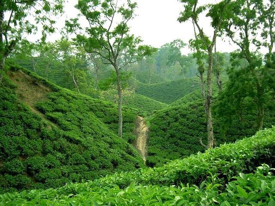

Sunderban
Biggest Mangrove Forest

Sundarbans is a mangrove area in the delta formed by the confluence of the Padma, Brahmaputra and Meghna Rivers in the Bay of Bengal. It spans the area from the Baleswar River in Bangladesh's division of Khulna to the Hooghly River in India's state of West Bengal. It comprises closed and open mangrove forests, land used for agricultural purpose, mudflats and barren land, and is intersected by multiple tidal streams and channels. Four protected areas in the Sundarbans are enlisted as UNESCO World Heritage Sites, viz. Sundarbans West (Bangladesh), Sundarbans South (Bangladesh), Sundarbans East (Bangladesh) and Sundarbans National Park (India).
Lakkatura Tea garden
Biggest Tea garden of Bangladesh

SYLHET, IN THE NORTHEAST OF BANGLADESH, is renowned for the beauty of its tea gardens, and among the lot, Lakkatura is considered the most scenic. It is also one of the largest tea gardens in the country, covering a total of 3,200 acres. This estate was officially established in 1875, and it now produces an astounding 550 tons of tea each year.
A number of dirt roads intersect the garden, some purpose-built to transport tea across and beyond the grounds. Others are simply part of a larger network of roads cutting through Lakkatura, taking visitors through hills of neatly manicured rows of tea plants. Following the latter set of roads takes you to several rural villages in and around Lakkatura estate, including makeshift villages where migrant workers live during the harvest.
Srimangak
A paradise of Green

Sreemangal (Bengali: শ্রীমঙ্গল, romanized: Srimongol) is an upazila of Moulvibazar District[1] in the Sylhet Division of Bangladesh. It is located at the southwest of the district, and borders the Habiganj District to the west and the Indian state of Tripura to the south. Sreemangal is often referred to as the 'tea capital' of Bangladesh, and is most famous for its tea fields. Other than tea, the rubber, pineapple, wood, betel, and lemon industries also exist in the upazila.